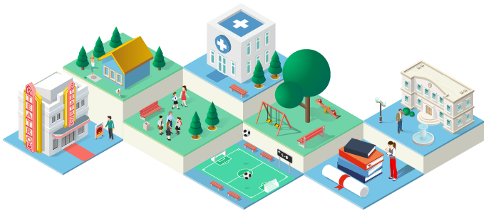
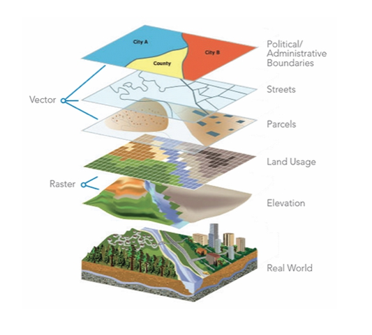
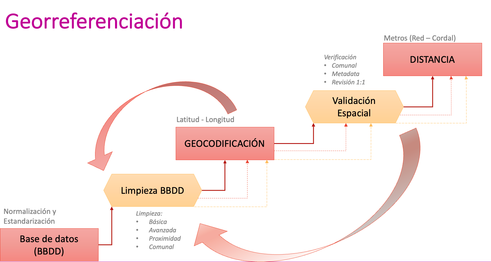
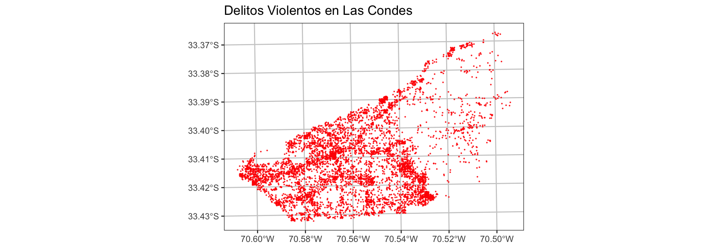
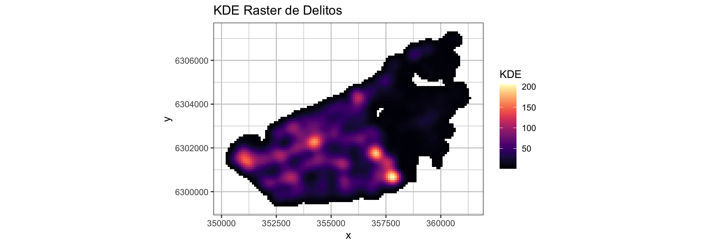
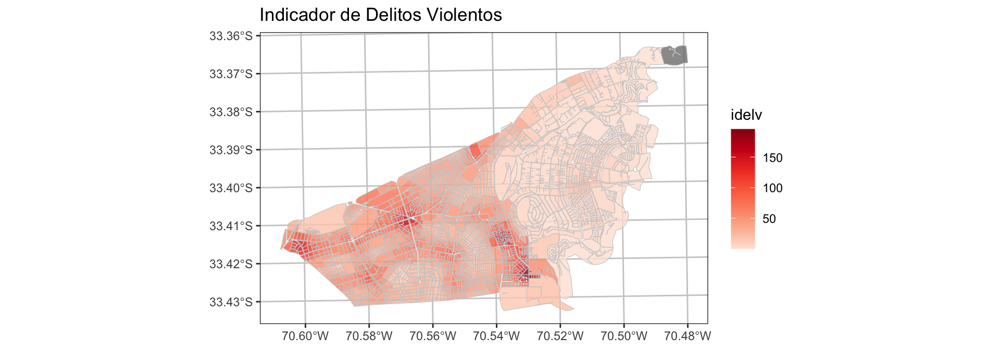
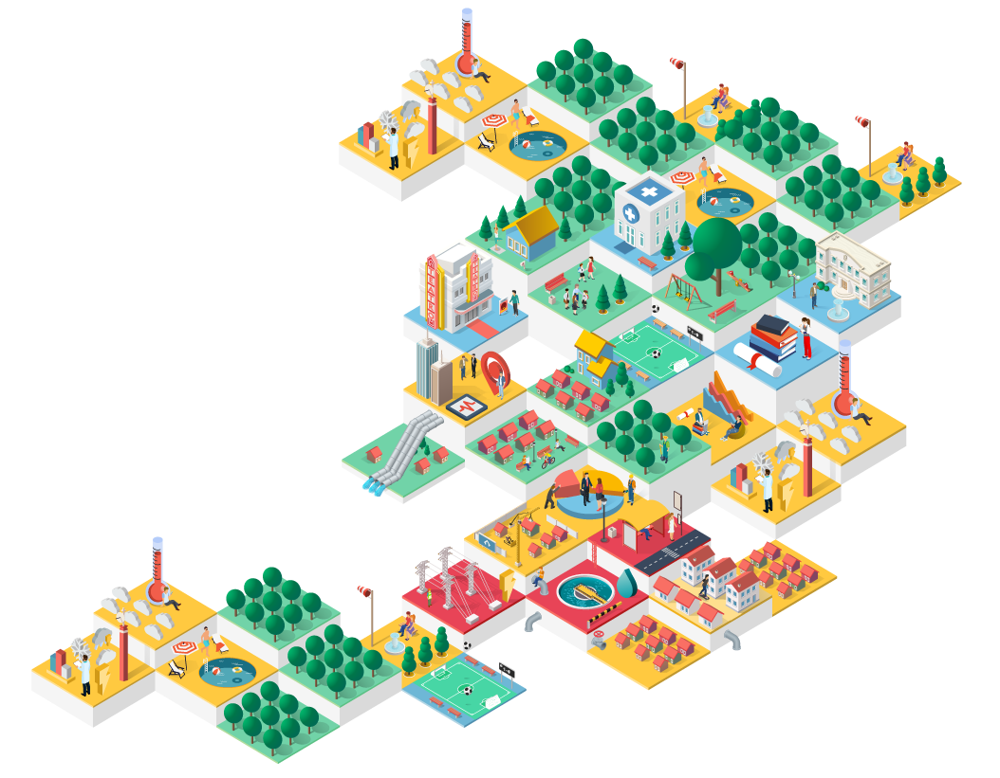
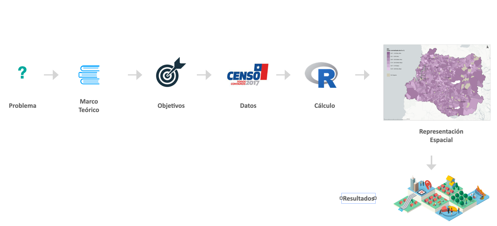
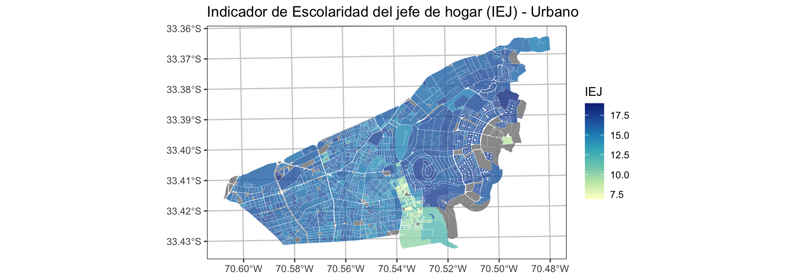

| address | lat | long |
|---|---|---|
| La Moneda, Santiago, Chile | -33.44282 | -70.65421 |
| Avenida Diagonal Las Torres 2640, Peñalolen | -33.48842 | -70.50944 |
| Presidente Errázuriz 3485, Las Condes, | -33.42144 | -70.59168 |
Herramientas de Geoanálisis
Aplicaciones para la Gestión Pública
Denis Berroeta G.
2025-03-19
Agenda
Agenda
- Importancia del Análisis Espacial
- Caso 1: Geocodificación Masiva de Direcciones
- Caso 2: Análisis de Focos de Delitos y Prevención
- Caso 3: Construcción de Indicadores Territoriales para Políticas Públicas
- Conclusiones

¿Es importante el territorio en la gestión de Políticas Públicas?
El espacio no es neutro:
Las decisiones de política pública generan impactos diferenciados según el territorio, afectando de manera desigual a comunidades urbanas y rurales.
La distribución de servicios esenciales, infraestructuras y recursos naturales define oportunidades y brechas en el acceso a educación, salud y empleo.
Factores ambientales como la calidad del aire, el acceso a espacios verdes y la exposición a riesgos naturales influyen directamente en el bienestar de las personas.
El análisis espacial permite visibilizar estas desigualdades, optimizando la planificación y asignación de recursos para lograr mayor equidad territorial.
¿Qué se necesita para hacer análisis espacial?
- Tipos de datos espaciales:
- Puntos (ubicaciones específicas, eventos)
- Líneas (calles, ríos)
- Polígonos (zonas administrativas)
- Ráster (imágenes satelitales, modelos de elevación)

- Software de Análisis Espacial:
- R Project
- Python
- QGIS o Argis

¿Cómo podría crear un objeto espacial, si solo tengo la dirección?
Caso 1: ¿Cómo geocodificar direcciones?
- DUOC: Medir si existe relación de la deserción estudiantil respecto a la distacia del domicilio del alumno a las sedes DUOC.


Un Ejemplo de Geocodificación
Librerías claves: tidygeocoder, sf, mapview
Código en R:
library(tidygeocoder) # geocodificar
library(dplyr) # manipulación de tablas
# Crear tabla con direcciones
addresses <- data.frame(
address = c("La Moneda, Santiago, Chile",
"Avenida Diagonal Las Torres 2640, Peñalolen",
"Presidente Errázuriz 3485, Las Condes,"))
# Geocodificar
geo_data <- addresses %>%
geocode(address, method = "osm")
geo_dataVisualización Espacial
¿Qué hago si tengo muchos puntos espaciales?
Calcular la Concentración (Inferencia espacial)
Caso 2: Plan de Seguridad Comunal para la Municipalidad de Las Condes (2017)
- Identificar zonas de riesgos de delitos y focalizar planes de prevención
- Evaluar la efectividad de los iniciativas de control (cámaras, ilumniaria, casetas, ect.)
- Medir relaciones de los delitos variables sociodemográficas como desempleo, hacinamiento, nivelsocioeconómico, etc.
Kernel Density Estimation (KDE)
KDE es un método de análisis espacial que permite identificar zonas con mayor concentración de eventos, como delitos. Funciona calculando la densidad en torno a cada punto de datos y generando un mapa de calor, donde los colores más intensos indican áreas de mayor riesgo.
\[ \hat{f}(x)=\frac{1}{n}\sum_{i = 1}^{n}K_h(x-x_i)= \frac{1}{nh}\sum_{i = 1}^{n}K\left(\frac{x-x_i}{h}\right) \]

Ejemplo en R: Lectura de casos policiales (anonimizados)
# Lectua de casos policiales
violencia_df <- readRDS(file = "data/casos_violencia.rds")
head(violencia_df, 10) id x y
4423 1 351501.2 6301276
4836 2 359214.9 6303245
4837 3 351866.6 6301303
4844 4 351303.1 6301359
4916 5 351536.6 6301306
5125 6 357105.9 6301723
5127 7 356879.9 6301687
5188 8 356293.7 6304416
5223 9 357074.3 6301821
5240 10 356273.3 6302438# Transformar a objetos espacial sf
violencia <- st_as_sf(x = violencia_df,
coords = c("x", "y"), crs = 32719)
violenciaSimple feature collection with 6047 features and 1 field
Geometry type: POINT
Dimension: XY
Bounding box: xmin: 350490 ymin: 6299685 xmax: 361083.1 ymax: 6307023
Projected CRS: WGS 84 / UTM zone 19S
First 10 features:
id geometry
4423 1 POINT (351501.2 6301276)
4836 2 POINT (359214.9 6303245)
4837 3 POINT (351866.6 6301303)
4844 4 POINT (351303.1 6301359)
4916 5 POINT (351536.6 6301306)
5125 6 POINT (357105.9 6301723)
5127 7 POINT (356879.9 6301687)
5188 8 POINT (356293.7 6304416)
5223 9 POINT (357074.3 6301821)
5240 10 POINT (356273.3 6302438)
Cálculo del KDE
class : RasterLayer
dimensions : 83, 116, 9628 (nrow, ncol, ncell)
resolution : 100, 100 (x, y)
extent : 349990, 361590, 6299223, 6307523 (xmin, xmax, ymin, ymax)
crs : +proj=utm +zone=19 +south +datum=WGS84 +units=m +no_defs Calcular KDE con Función cuartica o esférica (quartic)
class : RasterLayer
dimensions : 83, 116, 9628 (nrow, ncol, ncell)
resolution : 100, 100 (x, y)
extent : 349990, 361590, 6299223, 6307523 (xmin, xmax, ymin, ymax)
crs : +proj=utm +zone=19 +south +datum=WGS84 +units=m +no_defs
source : memory
names : layer
values : 0, 204.92 (min, max)
kde_raster_df <- raster::as.data.frame(kde_raster, xy = TRUE) %>% na.omit()
umbral <- 1
kde_raster_df <- kde_raster_df %>%
mutate(layer = ifelse(layer < umbral, NA, layer))
ggplot() +
geom_raster(data = kde_raster_df %>% na.omit() ,
aes(x = x, y = y,
fill = layer)) +
scale_fill_gradientn(name = "KDE",
colors = (viridis::magma(100)), na.value = NA)+
coord_fixed()+
ggtitle(paste0("KDE Raster de Delitos") ) +
theme_bw() +
theme(panel.grid.major = element_line(colour = "gray80"),
panel.grid.minor = element_line(colour = "gray80"))Cálculo de Indicador de Delitos Violentos
library(exactextractr)
mz_comuna <- mz_comuna %>%
mutate(idelv = exact_extract(kde_raster,y = ., 'mean',
progress = FALSE))
mz_comuna %>% dplyr::select(NOM_COM, COD_INE_ID, POBLACION, idelv)Simple feature collection with 1661 features and 4 fields
Geometry type: POLYGON
Dimension: XY
Bounding box: xmin: 350531.7 ymin: 6299612 xmax: 362424.8 ymax: 6307354
Projected CRS: WGS 84 / UTM zone 19S
First 10 features:
NOM_COM COD_INE_ID POBLACION idelv geometry
1 LAS CONDES 131140410011 300 6.3871064 POLYGON ((360766.9 6306933,...
2 LAS CONDES 131140410012 27 7.1615911 POLYGON ((360580.2 6306935,...
3 LAS CONDES 131140410013 128 7.0001998 POLYGON ((360533.1 6306898,...
4 LAS CONDES 131140410014 50 2.0534499 POLYGON ((360785.5 6306451,...
5 LAS CONDES 131140410015 98 3.8536012 POLYGON ((360765.2 6306800,...
6 LAS CONDES 131140410016 166 1.0703876 POLYGON ((360876.6 6306360,...
7 LAS CONDES 131140410017 80 0.2934505 POLYGON ((361032.8 6306374,...
8 LAS CONDES 131140410018 53 5.6594882 POLYGON ((360609 6306733, 3...
9 LAS CONDES 131140410019 153 2.3988998 POLYGON ((360386.8 6306768,...
10 LAS CONDES 1311404100110 24 4.3553033 POLYGON ((360426.7 6306666,...
¿Podemos construir otros Indicadores Territoriales?
Indicador Territorial
Es una medida que refleja características o fenómenos específicos de una región o área geográfica, tales como la accesibilidad, la distribución de recursos, el desarrollo socioeconómico o los niveles de seguridad.
Estos indicadores están vinculados a un territorio y suelen ser utilizados para evaluar las condiciones y desigualdades entre distintas zonas.
Fuentes de Información: Censo 2017

Etapas
Indicador de Nivel Socioeconómico
Indicador de Escolaridad del jefe de hogar (IEJ) CIT-UAI
Para la construcción de este indicador se utilizó el promedio de años de estudio de jefes de hogar (EJH), que es una variable censal numérica (“JH_ESC_P”, en tabla de personas del censo 2017) que registra el nivel del curso más alto aprobado, medida en años sucesivos desde la enseñanza básica hasta estudios de postgrado.
Se calcula el promedio de esta variable para todos los jefes de hogar en cada manzana. Esta variable es representativa del capital cultural de cada hogar y está altamente correlacionada con el nivel de ingresos en Chile (Agostini et al. (2016)).
Cálculo de Indicador EJH
Classes 'sf' and 'data.frame': 1661 obs. of 25 variables:
$ COD_REG : num 13 13 13 13 13 13 13 13 13 13 ...
$ COD_COM : num 13114 13114 13114 13114 13114 ...
$ NOM_COM : chr "LAS CONDES" "LAS CONDES" "LAS CONDES" "LAS CONDES" ...
$ COD_ZON : num 1.31e+10 1.31e+10 1.31e+10 1.31e+10 1.31e+10 ...
$ CODINE017 : num 1.31e+13 1.31e+13 1.31e+13 1.31e+13 1.31e+13 ...
$ COD_INE_ID: chr "131140410011" "131140410012" "131140410013" "131140410014" ...
$ COD_CIU : chr "STG" "STG" "STG" "STG" ...
$ NOM_CIU : chr "GRAN SANTIAGO" "GRAN SANTIAGO" "GRAN SANTIAGO" "GRAN SANTIAGO" ...
$ POBLACION : num 300 27 128 50 98 166 80 53 153 24 ...
$ POR_POB : num 4.63e-05 4.17e-06 1.98e-05 7.72e-06 1.51e-05 ...
$ POR_POB_C : num 1.02e-03 9.17e-05 4.35e-04 1.70e-04 3.33e-04 ...
$ POB_NINOS : num 56 6 24 11 14 35 16 11 27 6 ...
$ POR_NINO : num 4.47e-05 4.79e-06 1.92e-05 8.79e-06 1.12e-05 ...
$ POR_NINO_C: num 0.001229 0.000132 0.000527 0.000241 0.000307 ...
$ SUPERFICIE: num 42265 7982 3695 21129 34242 ...
$ POR_SUP : num 5.31e-05 1.00e-05 4.65e-06 2.66e-05 4.31e-05 ...
$ POR_SUP_C : num 1.06e-03 1.99e-04 9.22e-05 5.27e-04 8.55e-04 ...
$ POB_JOV : num 51 6 19 10 33 41 16 15 31 5 ...
$ HOG_N : num 105 5 57 14 23 37 20 14 32 5 ...
$ H_HACI_T : num 0.0204 0 0 0 0 ...
$ JH_ESC_P : num 15.4 17.4 15.4 17.1 17.1 17.3 16.6 16.4 16.6 17.2 ...
$ H_MONO_T : num 0.143 0.2 0.281 0 0.087 ...
$ P_CESA_T : num 0.0235 0 0.0725 0 0.0444 ...
$ P_NINI_T : num 0.0784 0 0.2632 0 0.0909 ...
$ geometry :sfc_POLYGON of length 1661; first list element: List of 1
..$ : num [1:130, 1:2] 360767 360767 360766 360764 360761 ...
..- attr(*, "class")= chr [1:3] "XY" "POLYGON" "sfg"
- attr(*, "sf_column")= chr "geometry"
- attr(*, "agr")= Factor w/ 3 levels "constant","aggregate",..: NA NA NA NA NA NA NA NA NA NA ...
..- attr(*, "names")= chr [1:24] "COD_REG" "COD_COM" "NOM_COM" "COD_ZON" ...
ggplot() +
geom_sf(data = censo, aes(fill = IEJ), color =NA,
alpha=0.8, size= 0.1)+
scale_fill_distiller(palette= "YlGnBu", direction = 1)+
ggtitle("Indicador de Escolaridad del jefe de hogar (IEJ) - Urbano" ) +
theme_bw() +
theme(panel.grid.major = element_line(colour = "gray80"),
panel.grid.minor = element_line(colour = "gray80"))Relaciones con Nivel Socioeconómicos con Delitos
Conclusiones
Conclusiones
La transformación de datos espaciales nos permite extraer información estratégica para la toma de decisiones:
- De direcciones a coordenadas para análisis geoespacial.
- De puntos a densidades con KDE para identificar patrones de distribución.
- De ráster a polígonos para construir indicadores territoriales.
Detectamos relaciones espaciales relevantes que impactan en la planificación y distribución de recursos. Las decisiones basadas en análisis espacial mejoran la eficiencia en la gestión pública. Integrar el geoanálisis en políticas públicas permite diseñar intervenciones más equitativas y sustentables.
El territorio es el escenario donde ocurren los hechos, y comprenderlo nos permite proyectar mejores soluciones para el futuro.
Preguntas
Presentador
Denis Berroeta González
email: denis.berroeta@uai.cl.
linkedin: denis-berroeta
Coordinador de Investigación Centro de Inteligencia Territorial UAI. PhD (c) en Ciencia de Datos FIC-UAI.
Master of Data Science y Magister en Inteligencia Artificial FIC-UAI.
Bibliografía y Recursos
Recursos
- Repositorio de Datos y Códigos usados en el Taller.
Bibliografía
Agostini, Claudio A, Daniel Hojman, Alonso Román, and Luis Valenzuela. 2016. “Segregación Residencial de Ingresos En El Gran Santiago, 1992-2002: Una Estimación Robusta.” Eure (Santiago) 42 (127): 159–84.
Feria de Innovación: Herramientas de Geoanálisis Aplicadas a la Gestión Pública